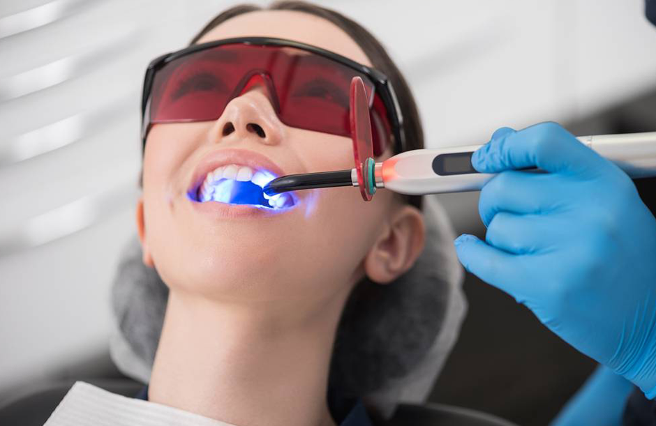

<!-- similar -->
<section class="mil-soft-bg">
  <div class="container mil-p-120-60">
    <div class="row align-items-center mil-mb-30">
      <div class="col-lg-6 mil-mb-30">
        <h3 class="mil-up">Blog :</h3>
      </div>
      <div class="col-lg-6 mil-mb-30">
        <div class="mil-adaptive-right mil-up">
          <a routerLink="/main/blog" class="mil-link mil-dark mil-arrow-place">
            <span>Voir tous</span>
          </a>
        </div>
      </div>
    </div>
    <div class="row">
      <div class="col-lg-6">
        <a routerLink="/main/blanchiment">
          <div class="mil-blog-card mil-mb-60">
            <div class="mil-cover-frame mil-up">
              
            </div>
            <div class="mil-post-descr">
              <h4 class="mil-up mil-mb-30">Blanchiment Dentaire</h4>
              <p class="mil-post-text mil-up mil-mb-30">
                Vous êtes-vous déjà demandé si l'éclaircissement dentaire était
                vraiment sans danger ? Vous avez probablement vu des
                publicités..
              </p>
              <div class="mil-link mil-dark mil-arrow-place mil-up">
                <a routerLink="/main/blanchiment">Voir plus</a>
              </div>
            </div>
          </div>
        </a>
      </div>

      <div class="col-lg-6">
        <a routerLink="/main/implant-dentaire">
          <div class="mil-blog-card mil-mb-60">
            <div class="mil-cover-frame mil-up">
              
            </div>
            <div class="mil-post-descr">
              <h4 class="mil-up mil-mb-30">Les dents naturelles</h4>
              <p class="mil-post-text mil-up mil-mb-30">
                Aujourd’hui, les soins dentaires évoluent rapidement : implants,
                facettes, bridges… Mais malgré toutes les technologies
                disponibles, aucune solution artificielle...
              </p>
              <div class="mil-link mil-dark mil-arrow-place mil-up">
                <a routerLink="/main/implant-dentaire">Voir plus</a>
              </div>
            </div>
          </div>
        </a>
      </div>
    </div>
  </div>
</section>
<!-- similar end -->
